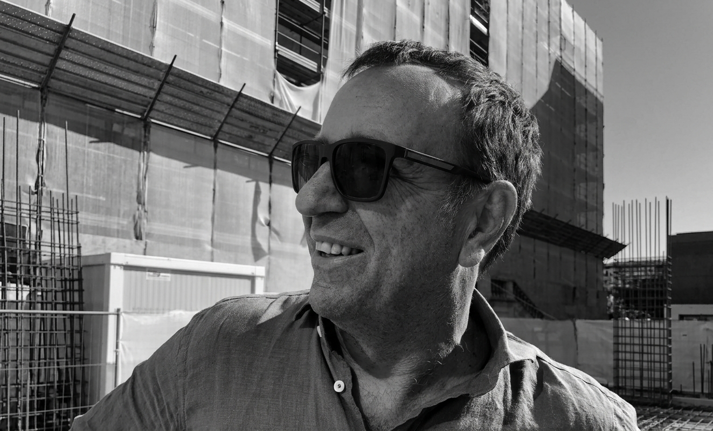

Roland Münzer Dipl. Ing.
Gründer & Leitender Architekt
Verantwortet Entwurf, Projektsteuerung und die architektonische Gesamtleitung des Büros.
Architektur, die dem Ort dient — reduziert, präzise, vom Bestand her gedacht.
Seit 2011 entwerfen wir Wohn- und Geschäftshäuser, die aus ihrem Ort heraus entstehen — aus Licht, Topografie und Material. Unser Anspruch ist Klarheit: in der Form, im Grundriss, im Detail. Jedes Projekt wird von Entwurf bis Ausführung von einem festen Team begleitet.

Verantwortet Entwurf, Projektsteuerung und die architektonische Gesamtleitung des Büros.
Betreut Wohnbauprojekte von der Vorplanung bis zur Bauleitung.
Schwerpunkt Sanierung und Umnutzung im Bestand.